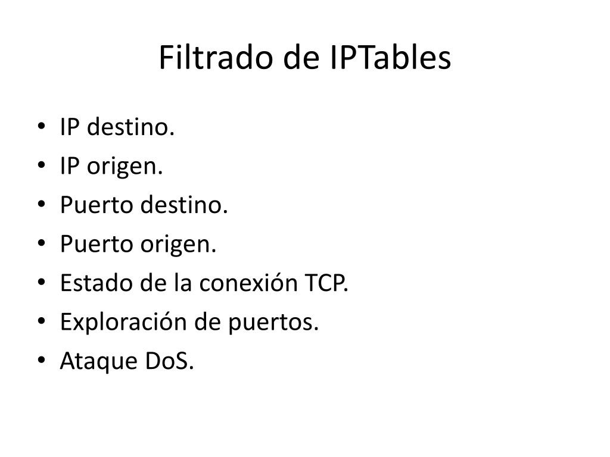
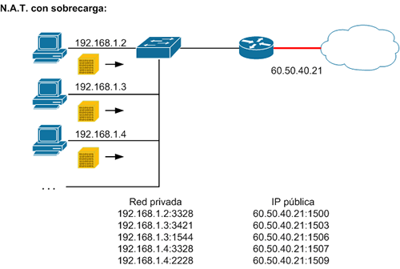

Interpretación y traducción de políticas de filtrado en iptables
CNO V – Seguridad Informática
Datos Generales
Esta actividad corresponde a la interpretación y traducción de políticas de filtrado en iptables,
aplicando los conceptos básicos del flujo de paquetes, tablas principales y reglas comunes para el
control del tráfico en Linux.
Nombre: Diego López Castro Fecha: 03 de febrero de 2026
Introducción
En el ámbito de la seguridad informática, el uso de firewalls es esencial para controlar el tráfico de red y proteger
los sistemas ante accesos no autorizados. En esta actividad se analizan e implementan políticas de filtrado utilizando iptables,
con el objetivo de comprender cómo se establecen reglas de entrada, salida y reenvío de paquetes dentro de un entorno Linux.
A través de distintos escenarios prácticos, se evaluó el impacto de permitir o bloquear servicios específicos, reforzando la importancia
de una correcta configuración para mantener la integridad, disponibilidad y confidencialidad de la red.
1. Completa los espacios conforme se explica el flujo del paquete
Cuando un paquete llega al sistema, primero pasa por una tabla,
después por una cadena y finalmente se ejecuta una regla.
Este comando permite el tráfico TCP entrante a los puertos 80 y 443
5. Variables y opciones comunes
a) Limitar intentos por minuto
iptables --limit 1/minute
b) Filtrar por IP de origen
iptables -s 192.168.1.0/24
c) Ver solo números, sin DNS (ni resolución de puertos)
iptables -L -n
d) Ver reglas con contadores (paquetes y bytes)
iptables -L -v
6. ¿Qué hace esta regla?
Regla dada:
iptables -A INPUT -i eth0 -p tcp -m multiport --dports 22,80,443 \
-m state --state NEW,ESTABLISHED -j ACCEPT
Esta regla permite que entre tráfico TCP por la interfaz eth0 hacia los puertos
22 (SSH), 80 (HTTP) y 443 (HTTPS), siempre que el estado de la conexión sea
NEW o ESTABLISHED.
10. Permitir tráfico TCP entrante a puertos 80 y 443 solo si es conexión establecida o relacionada
iptables -A INPUT -p tcp -m multiport --dports 80,443 -m state --state ESTABLISHED,RELATED -j ACCEPT
11. Permitir tráfico TCP entrante por eth0 a 22, 80 y 443, registrar intentos y permitir solo NEW y ESTABLISHED
iptables -A INPUT -i eth0 -p tcp -m multiport --dports 22,80,443 -m state --state NEW -j LOG --log-prefix "Intento "
iptables -A INPUT -i eth0 -p tcp -m multiport --dports 22,80,443 -m state --state NEW,ESTABLISHED -j ACCEPT
Análisis Multimedia
Evidencia Visual

Figura 1 Filtrado de IPTables

Figura 2. NAT, reglas de filtrado.
Conclusión
La actividad permitió comprender cómo funciona el filtrado de paquetes en iptables, identificando el rol
de las tablas y cadenas. Además, se reforzó el conocimiento sobre reglas prácticas utilizadas para permitir
o bloquear tráfico, así como la aplicación de filtros por IP, puertos y estados de conexión.